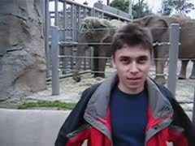

Give your agent eyes.
Paste a video link. Your agent gets back one timeline of what was said and what was on screen. No cookies, no API keys, no account.
Nothing to install with uv. Works with Claude Code, Codex, Cursor and any MCP client. Read the docs
timeline.md
Latest kept frame

00:00How it works
Cheap first, smart always
tapetum tries the fastest way to get each piece and falls back only when it has to. Every step that fails is written down, so your agent never has to guess why.
Read the captions
Human captions win over auto-generated ones, in the language you ask for. It takes about a second and downloads no video.
youtube-transcript-api, then yt-dlpListen when there are none
It fetches a small audio file and runs Whisper on your machine. Silence is skipped, so it doesn't invent words over music.
about 99 languagesKeep the frames that matter
Every second gets sampled, and a frame stays only if the picture changed. One new line on a slide counts. A camera wobble doesn't.
--budget caps the totalBuilt for agents
Less to read, fewer tokens
An agent pays for every image and every word. tapetum spends that budget where the video actually changes.
| Feature | tapetum | A typical video script |
|---|---|---|
| Setup | One install. ffmpeg comes with it. | ffmpeg, Python packages and cookies, by hand |
| Output | One JSON object and one timeline file | A folder of images and a text dump |
| Frames | Picked by change, capped by a budget | One every N seconds |
| Detail | --at 03:12 fetches only that moment, sharp | Run the whole video again at higher quality |
| Failures | An error code and what to try next | A stack trace |
| Second run | Instant, from the cache | Everything again |
Plug it in
Your agent already knows how
Install it once. Then give your agent a link and ask it what you want to know.
Claude Code
Add the plugin, or drop the skill folder into ~/.claude/skills. The skill is under 50 lines, so it barely touches your context.
# inside Claude Code
/plugin marketplace add Nadercr7/tapetum
/plugin install tapetum@tapetumAny MCP client
Two tools, watch_video and zoom_video. Frames come back as images, not file paths.
{ "mcpServers": { "tapetum": {
"command": "uvx",
"args": ["--from", "tapetum[mcp]", "tapetum", "mcp"] } } }Codex, Cursor and the rest
AGENTS.md in the repo tells any coding agent how to call it. Or just tell it: run tapetum on this link.
tapetum "https://youtu.be/…" --lang ar,en
You, in a browser
Any run opens as a page: frames on one side, a searchable transcript on the other. Click a line to jump to its frame.
tapetum view ~/.tapetum/youtube-jNQXAC9IVRw
Straight answers
What it won't do
An agent that trusts a bad transcript is worse than one that knows the transcript is shaky. So tapetum tells it.
Private videos
Private, age-gated and login-only videos return login_required. Instagram and Vimeo mostly land here.
Datacenter IPs
YouTube blocks most servers. Run it from your own computer; tapetum doctor tells you what works there.
Dialects on the small model
Egyptian Arabic comes out garbled on the default model. --quality accurate fixes most of it, and tapetum warns you when it matters.
FAQ
Questions people ask
Does my video get uploaded anywhere?
No. Everything runs on your machine. The only network calls go to the video site and, the first time you need speech-to-text, to Hugging Face for the Whisper model.
Why is the first speech-to-text run slow?
It downloads the model once: about 500 MB for the default and 1.6 GB for --quality accurate. After that, a 7-minute Arabic video took about two and a half minutes on a laptop CPU in our test.
Which sites work?
Anything yt-dlp can open without a login: YouTube, TikTok, X, Reddit, Twitch, direct video links and files on your disk. Captions are fastest on YouTube; elsewhere it usually listens.
Can it read text on the screen?
For Latin scripts, add --ocr. For Arabic and other scripts classic OCR is unreliable, so the agent reads the frame itself, which current models do well.
Is it free?
Yes, MIT licensed. Please use it on videos you're allowed to watch.
Why “tapetum”
The tapetum is the mirror behind a cat's retina. It sends light back through the eye for a second look, which is why cats see in the dark and why their eyes glow in a flashlight beam. Look twice, miss less.